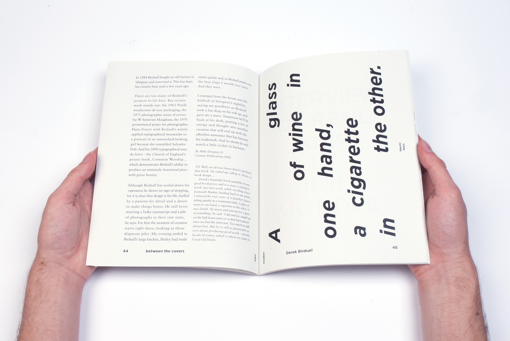
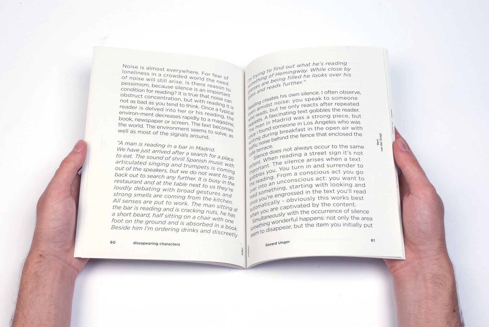
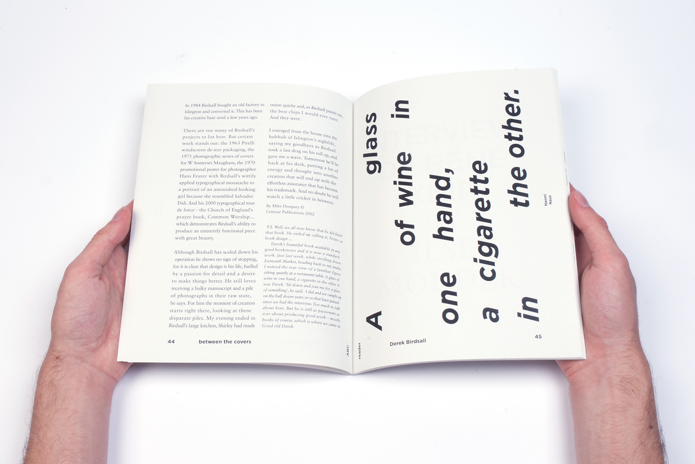
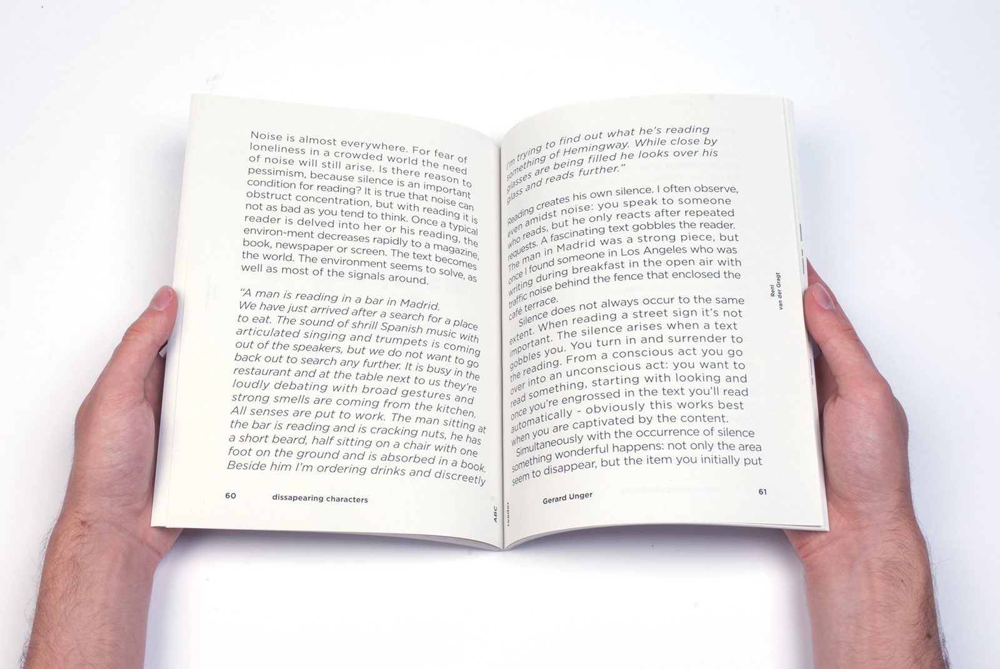

\/\/\/\
 



ABC Typographic Reader
This publication contains 7 texts by: Dexter Sinister, Wim Crouwel, Derek Birdsall, René Knip, Gerard Unger, Felix Weigand and Peter Bil'ak. The design is inspired on each personality.